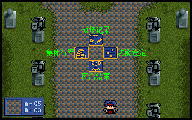
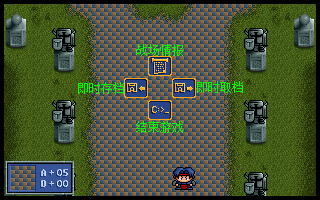
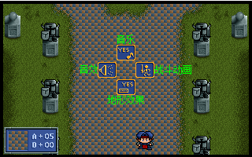
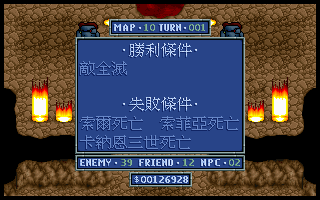

战场指令 |

战场记录 |

功能设定 |

战场情报 |
战场记录：选择此选项后，还会出现四个和记录有关的图块指令：
战场情报：选择此项后，会显示有关该战场的情报资料。
即时存档：存储战场上的进度。由于本功能是为了让玩者能把打到一半的仗暂时存储起来，等下次有空时继续把它完成，因此只提供一个栏位，并非正式进度。当战况面临决定性的关头时，暂存游戏进度可以避免前功尽弃，但暂存的战场进度只有一组，必须慎重算泽，否则若您用一组无法挽回的失败进度覆盖了先前的进度，那就只有重打一次了。战场进度可在开头动画用CONTINUE的选项继续下去。
即时取档：载入先前存储的战场进度。若先前有存储战况，即使之后做了错误的决定，也能随时把进度叫回来而不至于必须整关重打。
结束游戏：离开游戏，回到DOS底下。选择此项后，请回答YES或NO已确定是否离开游戏回到DOS。
功能设定：本选项可以让您设定一些游戏的功能开关。选择本指令后，便会出现四个指令开关，这些指令的预设状态都是开，以决定键选择一次会关掉，再选择一次则又会打开。
音乐：决定背景音乐的播放与否。
音效：决定各种音效的发出与否。
地形效果：决定地形视窗的出现与否。平时本视窗会随时显示游标所在的地形的攻击力和防御力影响，以及游标中人物的生命力。
战斗动画：决定战斗动画的使用与否。若将此项设定为关闭，则除我方主动进攻外，其他战斗时将以简易战斗模式来取代平时的动画战斗模式。
集体行军：当出场的我方人物繁多，而敌人又相距较远时，逐一移动我方人物也是件累人的事，此时便可使用行军指令。使用行军指令后，程序会先问您是否确定要行军，确定后，则所有未行动的我方人物便会朝着游标所在位置执行移动，在面积广大的战场特别方便。
回合结束：强行结束本回合的行动。若您不想再做任何调派，只想看看敌人将会怎么行动，在确定要结束回合后，所有还没行动过的我方人物都会变成行动后状态，从而换到NPC或敌人的行动。 |